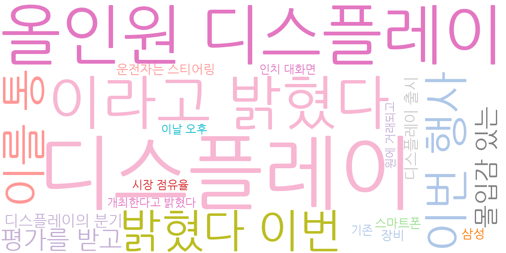
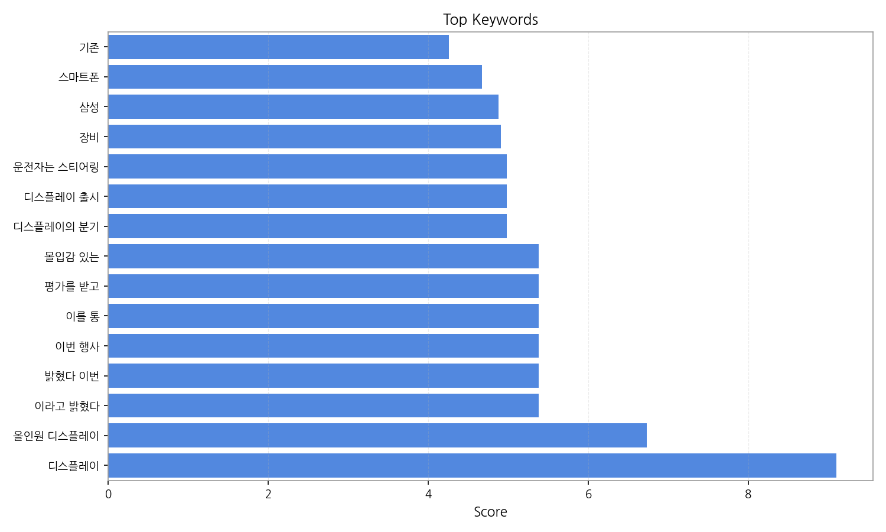
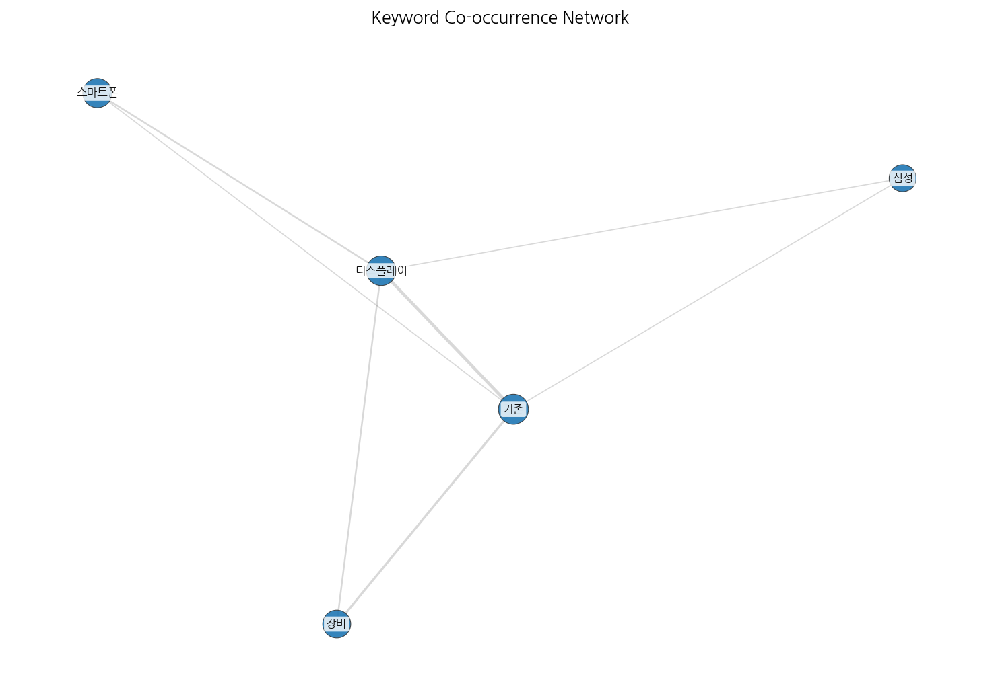
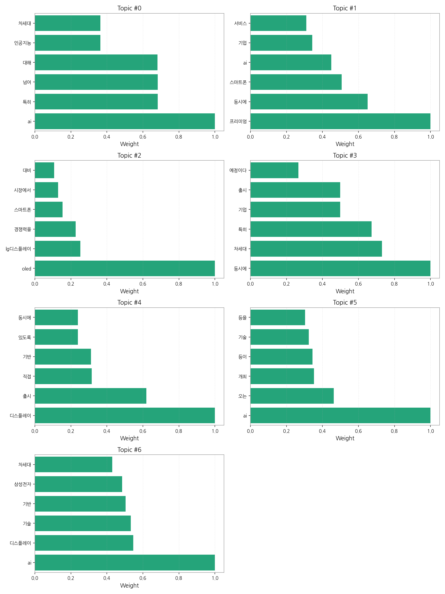
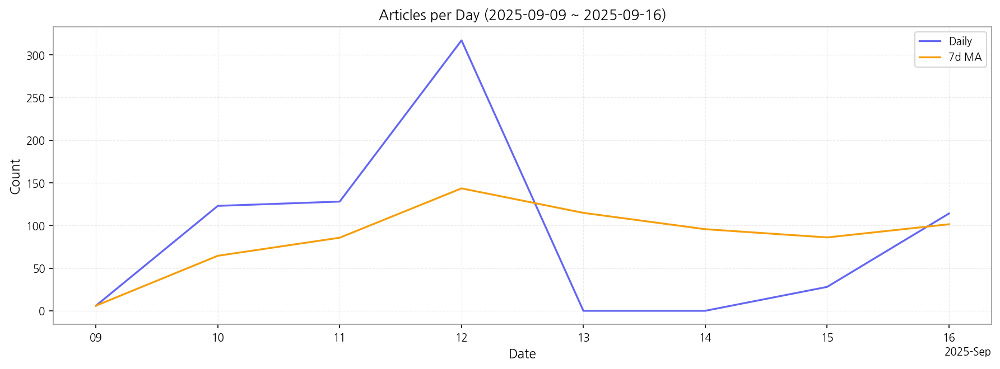

1) 상위 토픽을 3개 주제로 묶어 핵심 맥락을 설명하면 다음과 같습니다. 첫째, AI 기술을 중심으로 한 차세대 기술 경쟁이 치열하게 전개되고 있습니다. 특히 인공지능 기반의 새로운 서비스와 제품 출시가 빈번하게 이루어지고 있으며, 기업들은 경쟁력 확보를 위해 AI 기술 도입에 적극적으로 나서고 있습니다. 둘째, 프리미엄 스마트폰 시장을 중심으로 한 디스플레이 기술 경쟁이 심화되고 있습니다. 삼성전자와 LG디스플레이를 비롯한 주요 기업들은 OLED 등 차세대 디스플레이 기술을 앞세워 시장 점유율 확대에 주력하고 있으며, AI 기술과의 접목을 통해 더욱 고도화된 제품을 선보이고 있습니다. 셋째, 주요 기업들의 신제품 출시와 관련된 소식이 빈번하게 보도되고 있습니다. 이는 차세대 기술 경쟁 심화와 시장 선점 경쟁이 활발하게 진행되고 있음을 보여줍니다.
2) 최근 변화/스파이크를 짚어보면, 9월 12일 기사 수가 317건으로 급증한 것을 확인할 수 있습니다. 이는 특정 기업의 신제품 발표나 중요한 기술 관련 행사 개최 등의 이벤트가 영향을 미쳤을 가능성이 높습니다.
3) 실무 인사이트 3가지:

| Rank | Keyword | Score |
|---|---|---|
| 1 | 디스플레이 | 9.099 |
| 2 | 올인원 디스플레이 | 6.728 |
| 3 | 이라고 밝혔다 | 5.383 |
| 4 | 밝혔다 이번 | 5.383 |
| 5 | 이번 행사 | 5.383 |
| 6 | 이를 통 | 5.383 |
| 7 | 평가를 받고 | 5.383 |
| 8 | 몰입감 있는 | 5.383 |
| 9 | 디스플레이의 분기 | 4.984 |
| 10 | 디스플레이 출시 | 4.984 |
| 11 | 운전자는 스티어링 | 4.984 |
| 12 | 장비 | 4.910 |
| 13 | 삼성 | 4.877 |
| 14 | 스마트폰 | 4.667 |
| 15 | 기존 | 4.258 |




1) 상위 토픽을 3개 주제로 묶어 핵심 맥락을 설명하면 다음과 같습니다. 첫째, AI 기술을 중심으로 한 차세대 기술 경쟁이 치열하게 전개되고 있습니다. 특히 인공지능 기반의 새로운 서비스와 제품 출시가 빈번하게 이루어지고 있으며, 기업들은 경쟁력 확보를 위해 AI 기술 도입에 적극적으로 나서고 있습니다. 둘째, 프리미엄 스마트폰 시장을 중심으로 한 디스플레이 기술 경쟁이 심화되고 있습니다. 삼성전자와 LG디스플레이를 비롯한 주요 기업들은 OLED 등 차세대 디스플레이 기술을 앞세워 시장 점유율 확대에 주력하고 있으며, AI 기술과의 접목을 통해 더욱 고도화된 제품을 선보이고 있습니다. 셋째, 주요 기업들의 신제품 출시와 관련된 소식이 빈번하게 보도되고 있습니다. 이는 차세대 기술 경쟁 심화와 시장 선점 경쟁이 활발하게 진행되고 있음을 보여줍니다.
2) 최근 변화/스파이크를 짚어보면, 9월 12일 기사 수가 317건으로 급증한 것을 확인할 수 있습니다. 이는 특정 기업의 신제품 발표나 중요한 기술 관련 행사 개최 등의 이벤트가 영향을 미쳤을 가능성이 높습니다.
3) 실무 인사이트 3가지:
| Idea | Target | Value Prop | Score |
|---|---|---|---|
| AI 기반 디스플레이 품질 관리 플랫폼 (KR) | LG디스플레이, 삼성디스플레이와 같은 대기업 디스플레이 제조사의 품질 관리 부서, 중견/중소 디스플레이 부품 제조사 | AI 기반 이미지 분석 기술을 활용하여 디스플레이의 미세 결함을 자동으로 검출하고 분류합니다. 기존 방식 대비 검사 속도와 정확도를 크게 향상시켜 불량률을 최소화하고 생산성을 높입니다. 차별화 포인트는 실시간 데이터 분석을 통한 예측적 품질 관리 기능 제공입니다. | 4.50 |
| 스마트폰 디스플레이 품질 예측 서비스 (KR) | 삼성전자, LG전자와 같은 대기업 스마트폰 제조사의 품질 관리 부서 | AI 기반 머신러닝 모델을 활용하여 디스플레이의 품질을 예측하고, 불량률을 사전에 예방합니다. 기존 방식 대비 정확도와 효율성을 높이고, 출시 전 문제점을 사전에 파악하여 리스크를 최소화합니다. 차별화 포인트는 다양한 디스플레이 패널에 대한 예측 모델 제공입니다. | 4.20 |
| 모빌리티용 AI 기반 사이니지 광고 플랫폼 (JP) | 일본 내 자동차 제조사, 모빌리티 서비스 제공업체, 광고 대행사 | AI 기반의 실시간 데이터 분석을 통해 운전자의 선호도와 위치 정보를 파악하여 맞춤형 광고를 제공합니다. 기존의 단순 노출 광고 대비 높은 효율성을 제공하며, 차별화 포인트는 운전 중 안전을 고려한 광고 노출 방식입니다. | 4.00 |
| AI 기반 전자부품 수요 예측 및 재고 관리 서비스 (EU) | EU 지역 전자 부품 제조사, 유통업체, 조달 기업 | AI 기반 머신러닝 알고리즘을 통해 전자 부품의 수요를 정확하게 예측하고, 최적의 재고 수준을 관리하는 서비스를 제공합니다. 기존 방식 대비 재고 관리 비용을 절감하고, 생산 차질을 방지합니다. 차별화 포인트는 다양한 부품 종류에 대한 예측 모델 커스터마이징입니다. | 3.80 |
| AI 기반 디스플레이 부품 조달 플랫폼 (EU) | EU 지역 디스플레이 제조사, 부품 공급업체 | AI 기반의 매칭 알고리즘을 통해 디스플레이 제조사와 부품 공급업체를 연결하고, 최적의 조달 솔루션을 제공합니다. 기존 방식 대비 시간과 비용을 절감하고, 투명성을 높입니다. 차별화 포인트는 지속 가능한 조달을 위한 친환경 부품 정보 제공입니다. | 3.50 |